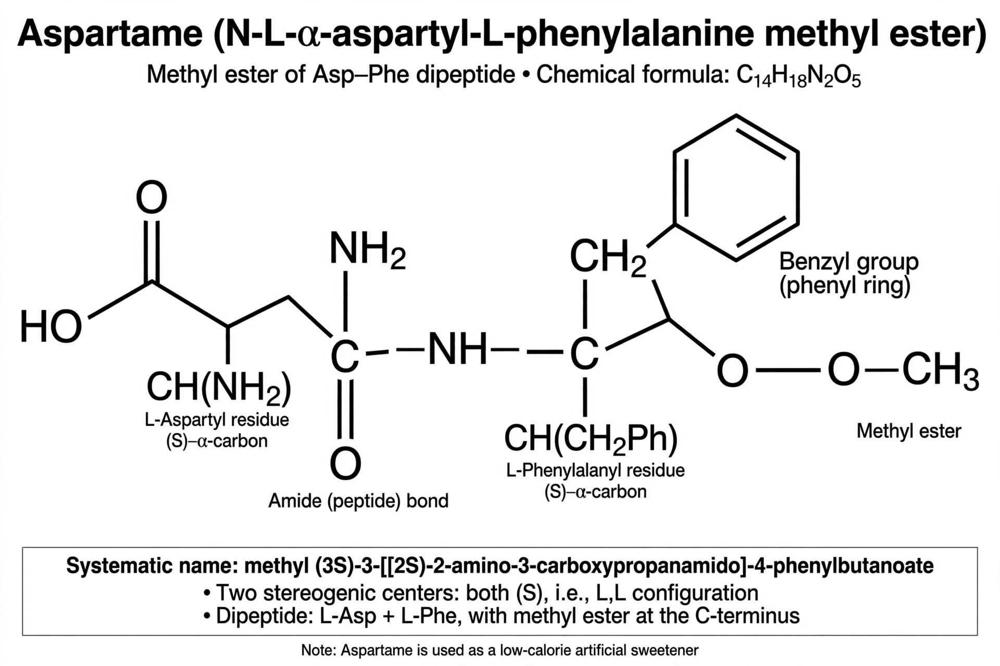

Aspartame is an artificial non-saccharide sweetener commonly used as a sugar substitute in foods and beverages. Chemically, aspartame is the methyl ester of the dipeptide of the amino acids L-aspartic acid and L-phenylalanine. It is roughly 200 times sweeter than sucrose (table sugar), so only small quantities are needed, and its caloric contribution is negligible — about 4 kilocalories per gram, comparable to sugar, but used in far smaller amounts.
Aspartame was discovered in 1965 by James M. Schlatter, a chemist working for G.D. Searle & Company, who accidentally tasted the compound while working on an anti-ulcer drug. It was first approved for use in dry foods by the U.S. Food and Drug Administration (FDA) in 1981 and is sold under brand names such as NutraSweet and Equal. Heat breaks aspartame down and destroys its sweetness, so it is mainly used in cold or room-temperature products such as diet soft drinks, chewing gum, yogurts, and tabletop sweeteners.
| Aspartame | |
|---|---|
 | |
| IUPAC name | Methyl L-α-aspartyl-L-phenylalaninate |
| Chemical formula | C14H18N2O5 |
| Molar mass | 294.30 g/mol |
| Appearance | White crystalline powder |
| Sweetness | ~200× sucrose |
| E number | E951 |
| Discovered | 1965, James Schlatter |
James Schlatter synthesized aspartame in December 1965 while producing a tetrapeptide for a candidate gastrin inhibitor. He noticed a sweet taste after licking his finger to pick up a piece of paper. Searle pursued the compound as a sweetener, and after a long and contested regulatory process — including investigations into the quality of early safety studies — the FDA approved aspartame for dry goods in 1981 and for carbonated beverages in 1983. Searle was acquired by Monsanto in 1985; the aspartame business was later sold and became NutraSweet.
On digestion, aspartame is broken down into its components: phenylalanine (about 50%), aspartic acid (40%), and methanol (10%). Because it releases phenylalanine, products containing aspartame must carry a warning for people with phenylketonuria (PKU), a genetic disorder in which phenylalanine cannot be properly metabolized. The methanol released is comparable to amounts found in fruit juices and is rapidly converted to formaldehyde and then formic acid and excreted.
Aspartame is one of the most extensively studied food additives, and regulatory agencies including the FDA, the European Food Safety Authority (EFSA), and the Joint FAO/WHO Expert Committee on Food Additives (JECFA) have repeatedly affirmed its safety at current exposure levels, with an acceptable daily intake of 40–50 mg per kilogram of body weight. In July 2023, the International Agency for Research on Cancer (IARC) classified aspartame as "possibly carcinogenic to humans" (Group 2B) based on limited evidence, while JECFA simultaneously reaffirmed the existing acceptable daily intake, concluding the evidence of a cancer link was not convincing.
Aspartame sweetens thousands of products worldwide, most famously diet colas. It is often blended with other sweeteners such as acesulfame potassium to produce a more sugar-like taste profile and greater stability. Unlike sucralose or saccharin, aspartame is not heat-stable and loses sweetness during prolonged baking.